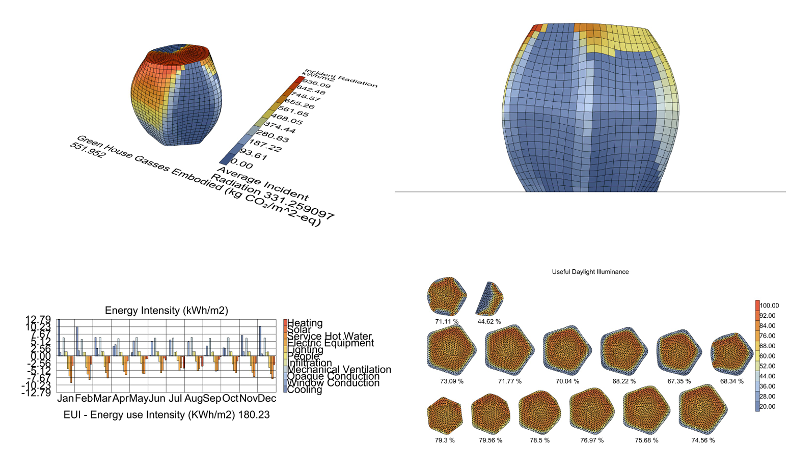
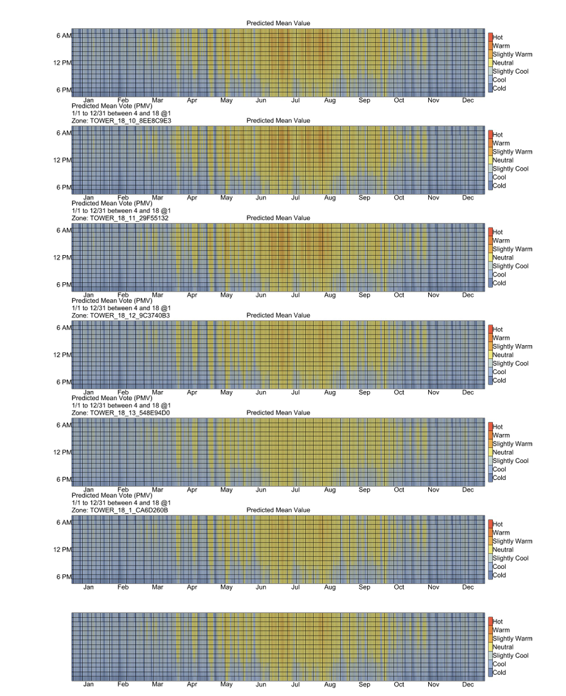
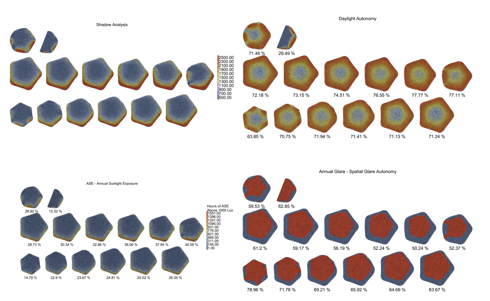
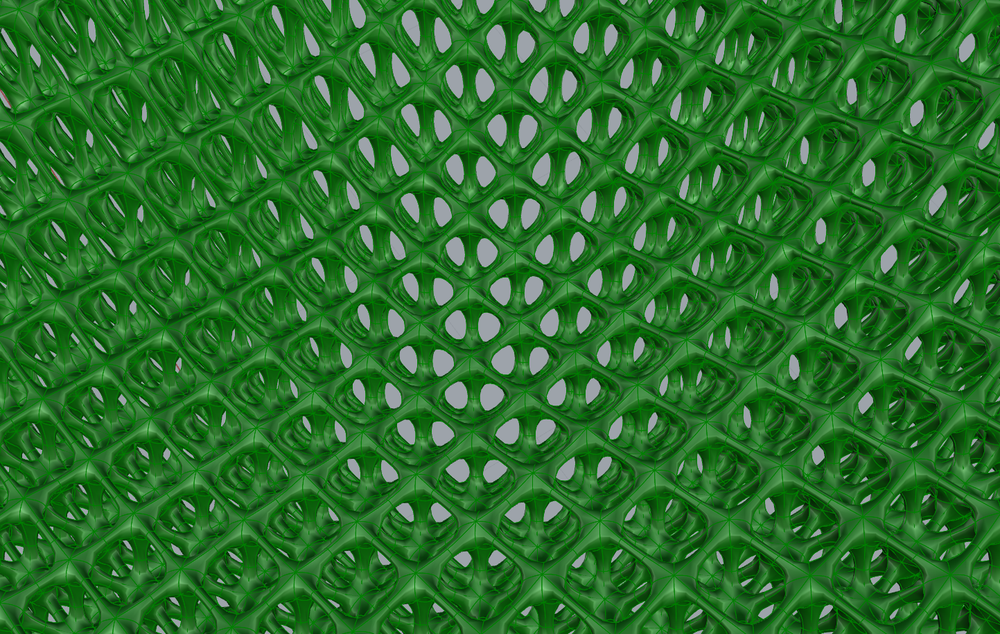

Parametric Design
We use Rhino and Grasshopper to create complex, optimized building forms that respond to site conditions, program requirements, and environmental factors.
- Form-finding and optimization
- Complex geometry development
- Facade pattern generation
- Structural analysis integration

Environmental Analysis
Our Ladybug-powered simulations ensure every design decision is backed by data, from solar exposure to wind patterns.
- Daylighting analysis
- Solar radiation studies
- Thermal comfort modeling
- Glare analysis

Energy Modeling
We simulate building energy performance from concept through construction, targeting net-zero and beyond.
- Annual energy simulations
- HVAC system optimization
- Passive strategy evaluation
- Carbon footprint analysis

Sustainable Systems
Integrated approach to building systems that minimize environmental impact while maximizing occupant comfort.
- Renewable energy integration
- Water harvesting systems
- Green roof design
- Material lifecycle assessment

BIM Integration
Seamless workflow from parametric design to construction documentation with full BIM coordination.
- Parametric-to-BIM pipeline
- Clash detection
- Quantity takeoffs
- Construction sequencing

Biophilic Design
Creating connections between occupants and nature through evidence-based design strategies.
- Natural ventilation design
- Living wall systems
- Biophilic pattern integration
- Indoor environmental quality
